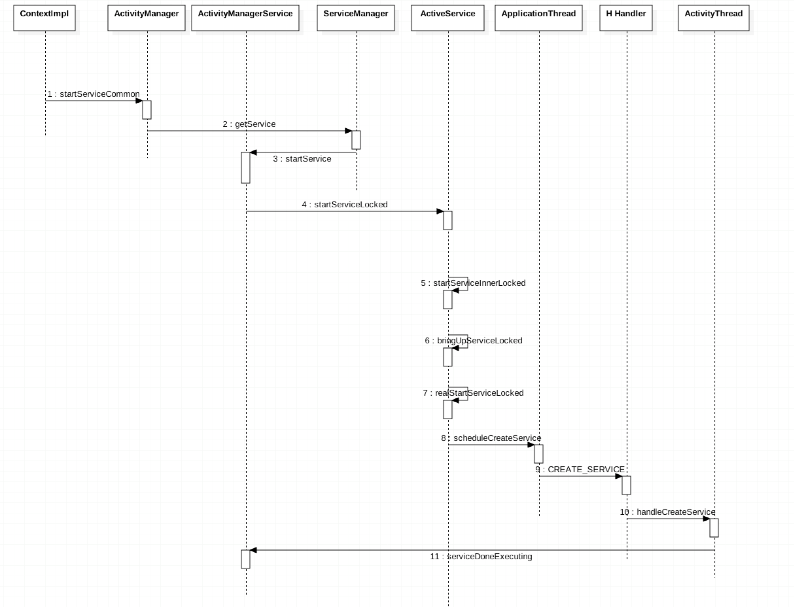
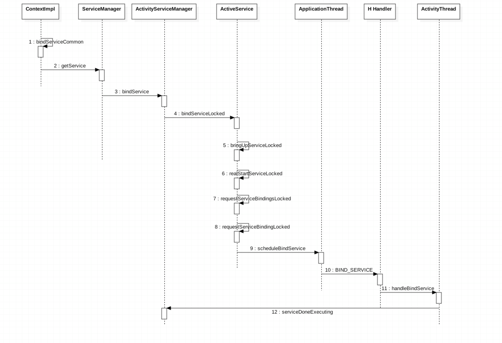

本文基于aosp8.0源码分析
Service的启动
Service的启动分两种，一种startService，另一种bindService
StartService
一般我们会在Activity中通过startService来启动一个服务
Activity.startService
其内部实际上是由ContextWrapper的startService来启动，实际启动的地方是在ContextImpl.startService
ContextImpl.startService
ContextImpl.startServiceCommon
- 这里首选需要验证服务,5.0之后隐世服务就不被允许，何为隐世，未指定包名，未指定类名
- 从
ServiceManager中获取ActivityManager的IBinder对象 - 通过
IPC获取了ActivityManagerService对象 - 每个系统服务都采用了
AIDL的方式进行，不直接对外暴露代理
IActivityManager.aidl
该文件对应的native实现
ActivityManagerService.startService
ActivityManagerService就是ActivityManager定义的AIDL的具体实现- 调用
ActiveServices.startServiceLocked
ActiveServices.startServiceLocked
检查Service调用者合法性。创建并缓存Service信息
ActiveServices.startServiceInnerLocked
调用bringUpServiceLocked，处理返回结果
ActiveService.bringUpServiceLocked
如果服务已经启动，调用sendserviceArgsLocked。首次创建。获取进程信息。调用realStartServiceLocked
ActiveServices.realStartServiceLocked
更新服务优先级。通知ApplicationThread创建启动Service。之后调用sendServiceArgsLocked，其作用，处理Service参数，并回调onStartCommand
ActivityThread.scheduleCreateService
H Handler发出消息，创建service总结; 在8.0中，一个服务的启动流程是:
ContextImpl.startService->startCommonService->ActivityManager.getService->ServiceManager.getService->(IPC)AMS.startService->ActiveService.startServiceLocked->startServiceInnerLocked->bringUpServiceLocked->realStartServiceLocked->ApplicationThread.scheduleCreateService->H.handleCreateService
BindService
bindService的流程，跟startService很相似。
ActiveServices.bindServiceLocked
ServiceRecord存储每个Binder，也就是ServiceConnection。内部的数据结构都是Set，确保Binder唯一。调用bringUpServiceLocked
ActiveServices.bringUpServiceLocked
首次绑定Service的过程和startService一样。也是调用realStartServiceLocked。非首次也是调用sendServiceArgsLocked,这个函数中，如果有startService的话，那么会发出消息通知ApplicationThread需要处理onStartCommand。BindService下，会直接返回
创建过程一样。创建完之后会检查是否有Binder。如果有直接通知ApplicationThread需要绑定服务。
总结
客户端发起启动服务请求,通过IPC的方式通知SystemServer进程中的ActivityManagerService，然后通知ApplicationThread创建服务
时序图
StartService

BindService
